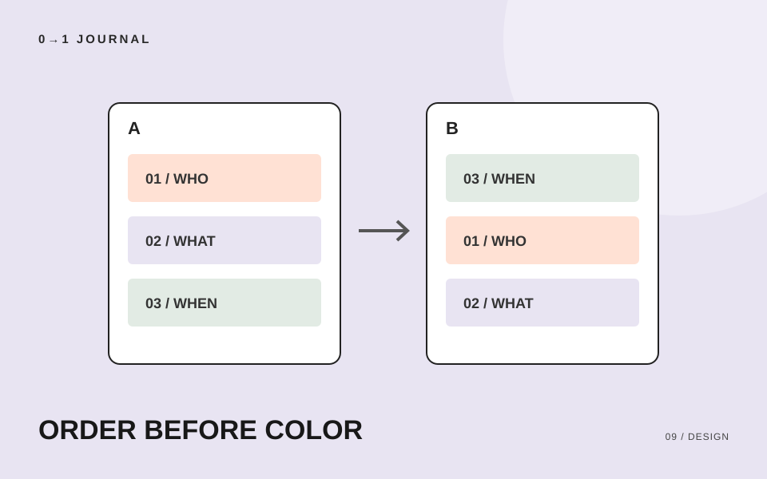

HTMLとCSSで形にはできるのに、ページの上に何を置くか決まらない。そんなときは、装飾を進める前に、同じ情報で順番だけが違う案を作ってみましょう。比較する対象を絞ると、選んだ理由を文章にできます。
この記事では、架空の陶芸工房の体験案内を使います。ワイヤーフレームとは、文章や写真を置く場所を簡単な線や箱で示した画面の設計図です。ここでは紙に描き、色や細かな寸法を決める前の情報の順番を扱います。
読者がページを開く場面を一つ書く
同じ体験案内でも、工房を初めて知る人と、申し込みを決めて日時を調べる人では、知りたい内容が違います。この練習では「陶芸が初めてで、休日に一人で参加できる体験を探している人」を想定します。
その人の疑問を「初めてでも参加できる？」「何を作る？」「いつ、いくらで参加できる？」の3つにします。これは配置を考えるための仮定であり、実際の利用者調査から得た結果ではありません。実案件なら、問い合わせ内容や依頼者への確認で仮定を見直してください。
想定を書く場所は、設計図の横の余白で十分です。途中で別の読者を思い浮かべたら、同じ案に混ぜず、別の場面としてメモします。
情報を三つの箱にまとめる
今回の案内は、参加条件、体験内容、開催・申し込み情報の三つに分けます。各箱には見出しだけでなく、実際に載せたい短い文も入れます。
- 参加条件：初めての人と一人での参加を受け付けるという説明。
- 体験内容：小皿を1枚作ることと、当日の作業の流れ。
- 開催・申し込み情報：開催日、所要時間、料金、申し込み方法。
これらは模擬案件の設定です。実際のページでは、受け入れ条件や料金を運営者に確かめてから原稿にします。また、完成品の受け取り方法など追加の疑問が出たら、必要な情報としてメモしておきましょう。
箱に「テキスト」とだけ書くと、見た目の置き場所しか比べられません。「初めての方も参加できます」のように中身を置くと、その場所でどの疑問に答えられるかを追えます。
順番だけを変えて、二つの案を描く
紙に同じ幅の縦長の枠を二つ描き、案Aは「参加条件→体験内容→開催・申し込み情報」、案Bは「開催・申し込み情報→参加条件→体験内容」と並べます。両案で文や情報量をそろえ、順番の違いに注目してください。
案Aなら、参加できるか確かめてから内容と日程へ進む流れです。案Bは、まず予定や予算が合うかを判断する流れになります。この練習では初参加への不安を先に扱う案Aを仮採用します。日程で候補を絞る場面を優先するなら、案Bを検討する理由があります。
「大きな写真が映えるから」だけで選んだ場合は、想定した読者の疑問に戻りましょう。写真にも作品の姿を伝える役割があります。その役割を体験内容の箱に書けば、写真を置く理由も説明できます。
上から読み、答えを探す動きを確かめる
案Aを上から読み、「一人で参加できるか」「何を作るか」「料金はいくらか」の答えを指で示します。答えがどこにもなければ、順番の問題ではなく原稿の不足です。先に情報を補い、その後で配置を比べ直します。
次に案Bでも同じことを行い、戻って読み直した場所や、迷った見出しを記録します。自分で試すだけでは初見の人の反応を確認したことにならないので、可能なら案の意図を先に説明せず、他の人にも答えを探してもらいましょう。
配置が決まった後は、余白で情報のまとまりを伝える記事を参考に、同じ箱に属する見出しと説明の距離を整えられます。
20分を目安に、採用理由を一文残す
自分の制作中のページから三つの情報を選び、順番が異なる案を二つ作ります。読み比べたら「誰が、何を先に確かめたい場面だから、この順番を選んだ」と一文で書いてください。確認できていない仮定も横に残しておきます。
完成物は、二つの配置案と採用理由です。細かな装飾は、その理由を読み返してから始めましょう。別の題材でも練習したい場合は、情報設計とワイヤーフレームの無料レッスンに課題があります。
記載内容へのご質問や訂正のご連絡は、hello@junkbranding.comまでお願いします。